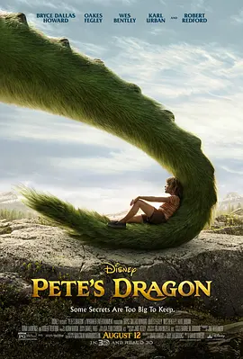

6.7
彼得的龙
Pete's Dragon
2016
美国
评分 6.7
导演:
大卫·洛维
演员:
奥克斯·费格雷 / 布莱丝·达拉斯·霍华德 / 罗伯特·雷德福 / 乌娜·劳伦斯 / 韦斯·本特利
类型:
冒险,奇幻,家庭
剧情简介
在太平洋西北部的连绵森林里，晨雾常常在树冠间悄然流动，使这片原始而幽深的土地带着几分神秘的色彩。林务员格蕾丝在巡查中遇见一个从林中走出的男孩，他衣衫沾着泥土，眼神警惕，却带着柔软的倔强。这个名叫彼得的孩子声称自己在森林中生活了多年，而保护他的，是一条名叫艾略特的绿色巨龙。格蕾丝最初以为这只是孩子的想象，却在男孩的躲闪与坚定之间，察觉到某些难以解释的真实。小镇居民对森林中的传说始终半信半疑，只有格蕾丝的父亲查穆先生坚持自己年轻时见过龙。随着彼得的出现，这个多年被当作笑谈的故事逐渐显得不再那样荒诞。格蕾丝试图理解彼得与龙之间的依存关系，而彼得也在犹豫中体会久违的人类温暖。与此同时，森林外的世界逐渐逼近他们的隐秘乐土，猎人、木材公司与不知情的镇民都可能打破这份脆弱的平衡。影片在温柔的光影中展开彼得与艾略特之间深厚的情感。他们在山谷间穿梭、在风声中飞翔，那份纯粹的信任像森林里最古老的树根一样牢固。随着外界的冲突逐步升温，彼得不得不面对选择：是回到人类的生活，还是继续守住与艾略特共享的自由天地。故事以柔和的节奏推进，让观众在奇幻与现实的交叠中，感受到关于友谊、成长与勇气的力量。